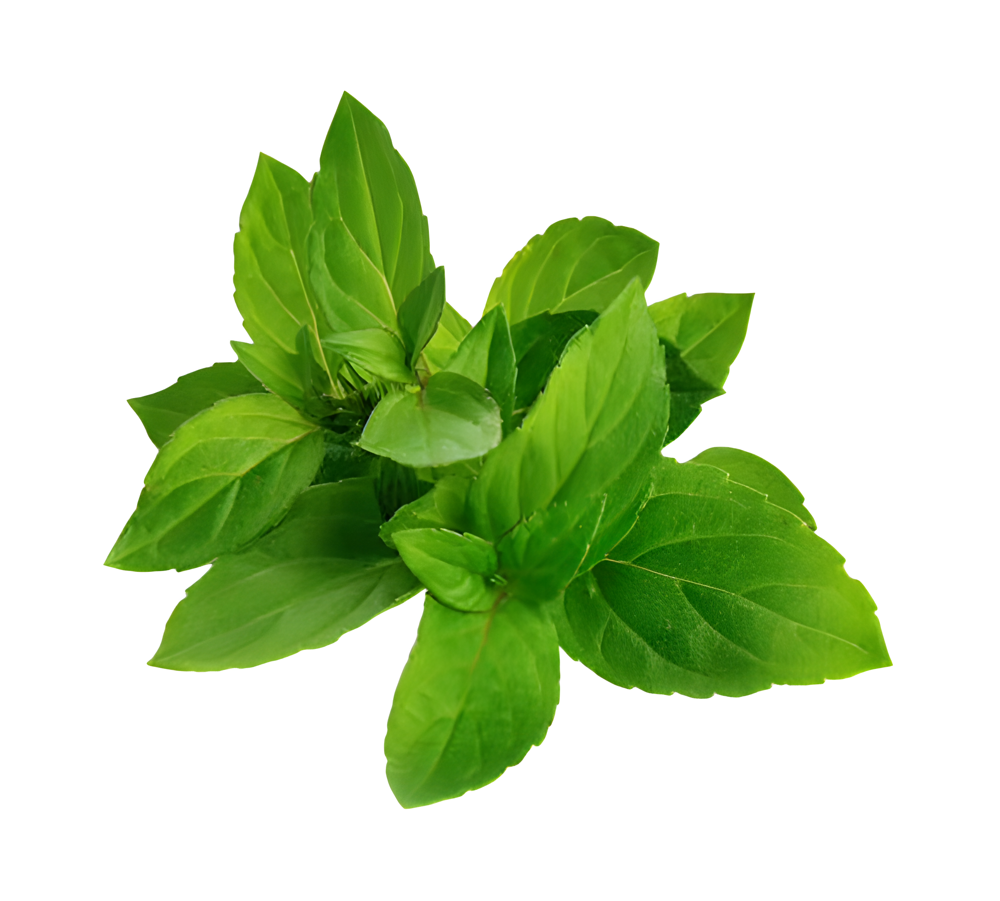

Chequeo rápido
Comparás tu muestra con una referencia y sabés si la tierra pasó el límite de riesgo. Nadie toca el plomo.
Tierra necesaria1 litro
Ciclos de cultivo1
RespuestaSeguro o en riesgo
Un proyecto de química y ecología

Una planta. Una tira. Un color azul.
Cuando una planta sufre, cambia por dentro. Aprendimos a leer ese cambio.
Lo esencial
Una planta de menta que nos avisa si la tierra tiene plomo. Sencillo, seguro y económico.
ppm significa partes por millón: una forma de medir cuánto plomo hay en la tierra.
En Almirante Brown, ACUMAR ya encontró plomo por encima de los valores de referencia en barrios como La Cumbre y Campo Ramos, cerca de zonas industriales y de quema de chatarra y cables. Es un problema real y cercano.
Cómo funciona
Una planta de menta se cultiva en el suelo que querés revisar. Si hay plomo, la planta lo siente.
Con vapor de agua se extrae el aceite de las hojas. Una muestra pequeña alcanza.
Unas gotas de aceite sobre una tira, un minuto de calor, y aparece un color azul. Cuánto azul hay muestra cómo está la planta y, con eso, cómo está la tierra.
La tira reactiva
La tira convierte lo que siente una planta en un color que cualquiera puede leer.
Probalo vos
Elegí cómo se ve tu muestra y mirá qué significa.
Tu suelo podría superar el umbral de riesgo.
Más azul significa más estrés en la planta: una señal de que el plomo la está afectando.
El umbral es el nivel de plomo desde el cual cultivar alimentos empieza a ser riesgoso.
Una planta, una tira y unas gotas de aceite. Un solo ciclo de cultivo.
Quien hace la prueba no toca el plomo en ningún momento.
Bajo costo, pensado para huertas, quintas y vecinos.
Sumate: probala en tu huerta, en tu quinta o en tu barrio.
Es una revisión preliminar. Sirve para saber cuándo vale la pena mirar la tierra más de cerca.
Resultados
Con más plomo, la planta responde más. Hasta que se enferma y la señal se cae. Ese pico marca su límite: unos 350 ppm.
También se probó con tierra real: la de una esquina de mucho tránsito en una zona industrial dio más señal que la de una zona rural. La diferencia es menor, pero se mantiene.
Tres formas de usarla
Comparás tu muestra con una referencia y sabés si la tierra pasó el límite de riesgo. Nadie toca el plomo.
Sirve para estimar cuánto plomo hay. Se agregan cantidades conocidas y se busca el punto donde la planta responde más.
Cada muestra problema crece junto a plantas de referencia con plomo conocido, y se comparan entre sí. Así cada ciclo se autocalibra, sin depender de un estándar fijo preparado de antemano.
En resumen
La menta es una forma accesible y de bajo costo de saber qué hay en el suelo. Probala en tu huerta y compartí lo que aprendas.
1
El proyecto desarrolla un método cualitativo y semicuantitativo para detectar contaminación por plomo en suelos. Se basa en la respuesta de estrés de la planta Mentha arvensis y en la variación de mentona y mentol en su aceite esencial.
Se estandarizó química y microbiológicamente el suelo para aislar el plomo como única variable. El aceite esencial se extrajo por destilación por arrastre de vapor y se analizó con un método cromatográfico adaptado sobre celulosa, con una solución reveladora de ácido acético, ácido sulfúrico y etil-vainillina. Las plantas expuestas al metal mostraron una reacción colorimétrica 15 segundos más rápida y tonalidades azules más intensas que el grupo control.
La investigación se dividió en dos enfoques:
2
La contaminación de suelos por metales pesados es una problemática ambiental crítica en ámbitos urbanos y agrícolas (Rashid et al., 2023; Alengebawy et al., 2021).
Distintos relevamientos de ACUMAR (Autoridad de la Cuenca Matanza Riachuelo) identificaron en el partido de Almirante Brown varios focos de exposición a metales pesados, ligados tanto a actividades industriales como a prácticas informales de gestión de residuos.
En conjunto, estos antecedentes muestran que el plomo en Almirante Brown no tiene una única fuente, sino que puede afectar a una gran cantidad de vecinos que viven cerca de estos focos.
Esta investigación se apoya, además, en un antecedente: bajo estrés salino controlado, Mentha arvensis sufre alteraciones metabólicas significativas. Los niveles del monoterpeno mentona se duplican o aumentan entre 2 y 2,5 veces, mientras que los de mentol permanecen estables (Kumar et al., 2023).
¿Produce el estrés abiótico por presencia de plomo (Pb) un efecto análogo sobre la biosíntesis de mentona en Mentha arvensis?
Validar a Mentha arvensis como bioindicador eficaz y accesible para determinar plomo en el suelo. El trabajo vincula saberes curriculares de Química Analítica, Ecología y Sostenibilidad, y convierte la respuesta fisiológica vegetal ante la toxicidad por metales en una herramienta de diagnóstico colorimétrica y semicuantitativa, útil para productores agrícolas y para la comunidad local.
3
El sustrato reposó cuatro meses para estabilizar el pH. La adición de acetato de plomo lo reduce levemente. La metabolización del acetato a dióxido de carbono genera ácido carbónico y provoca un nuevo descenso. La corrosión de los filamentos hacia hidróxido de plomo y la amortiguación microbiológica natural lo compensan de a poco. Al cabo de los cuatro meses, el suelo contaminado quedó 0,2 puntos por debajo del control.
Originalmente (ver 4.3, Tabla 2), este proceso de estandarización se aplicaría a un sustrato a analizar, antes de los métodos 3.4 y 3.5.
No fue posible conseguir estándares puros de mentona para una cromatografía en capa fina tradicional, cuantificada con ImageJ. Por eso se diseñó un método alternativo.
En 2026 se dotó al método cualitativo de capacidades semicuantitativas. Los valores de referencia son:
El protocolo usa tres sistemas de control de 3 litros de sustrato (divididos en macetas de 1 L, con un plantín de raíces incipientes cada una). Se contaminan a propósito con adiciones estándar de 200, 250 y 300 ppm de plomo. Tras la destilación y el ensayo colorimétrico (con 2 % de etil-vainillina para más sensibilidad), la muestra con mayor intensidad y velocidad de color indica la cercanía al pico crítico de 350 ppm totales. De ahí se extrapola la concentración inicial.
| Escenario | Intensidades | Lectura | Concentración inicial |
|---|---|---|---|
| 1 · Pico intermedio | 200 < 250 > 300 | La adición de 250 ppm es el pico de estrés. | 75–125 ppm |
| 2 · Toxicidad temprana | 200 > 250 > 300 | La adición más baja indujo toxicidad severa y superó el umbral. | > 125 ppm |
| 3 · Estrés progresivo bajo | 200 < 250 < 300 | Aumento lineal continuo: no se alcanzó el envenenamiento. | < 75 ppm (suelo seguro) |
Se puede aplicar una segunda fase con la siguiente ecuación, donde B es la concentración central previa:
Nueva concentración = B ± (ΔAC / 3)
Para B = 250 ppm, los nuevos límites de control son 233 y 266 ppm. Al ejecutar el ensayo con 233, 250 y 266 ppm, la ventana de incertidumbre analítica se contrae de ±25 ppm a ±17 ppm.
Pensado para cuando hay restricciones de volumen de sustrato o se necesita una respuesta más rápida que la del laboratorio tradicional. No usa adiciones estándar sucesivas: opera con una única condición basal.
El estrés abiótico induce una reprogramación metabólica que desregula la ruta biosintética de los monoterpenos (Caldo et al., 2025). Se reprime la expresión de la enzima terminal que convierte la mentona en mentol, y esto provoca la acumulación de precursores intermedios como la mentona (Cappellari et al., 2020).
Se prepara con muestras de suelo urbano contaminadas a propósito con una concentración crítica de 150 ppm de plomo. Tras el desarrollo de M. arvensis en esas condiciones, la adición de la solución salina y la extracción de sus aceites, los extractos se conjugan para definir un umbral cromático promedio. Ese valor es el punto de inflexión fitotóxico desde el cual el desarrollo de especies vegetales y herbáceas de consumo implica riesgos potenciales para la salud pública (Madhavan et al., 1989).
Pensado para superar las limitaciones de los métodos 3.4 y 3.5: el primero necesita mucho sustrato contaminado a propósito; el segundo depende de un único estándar fijo, preparado de antemano, y suma incertidumbre porque infiere el plomo en dos pasos indirectos, primero por la respuesta de la planta y luego por el color del extracto.
El diagnóstico por lotes incorpora referencias de concentración conocida que se desarrollan al mismo tiempo que las muestras problema. Así, el resultado no depende de un valor cromático absoluto fijado de antemano, sino de comparar materiales sometidos al mismo ciclo. Se organiza en ciclos de análisis cada dos meses aproximadamente, lo que genera una referencia interna propia de cada período de crecimiento.
Terminado el período de crecimiento, la respuesta colorimétrica de cada planta problema se compara con la de las unidades de concentración conocida. Eso arma una semi curva comparativa de referencia para cada ciclo, que permite ubicar la muestra problema dentro de un intervalo relativo de respuesta. El objetivo no es una concentración absoluta con precisión instrumental, sino saber si la respuesta está cerca, por debajo o por encima del comportamiento del control positivo de 350 ppm.
Al usar controles desarrollados en paralelo, el método reduce la dependencia de un estándar colorimétrico fijo preparado con anterioridad, mejora frente al protocolo 3.5. Todas las unidades del lote pasan por el mismo período de crecimiento y, en lo posible, por las mismas condiciones, de modo que las diferencias entre muestras se interpretan dentro del contexto de cada ciclo. Esto incorpora en la lectura parte de la variabilidad propia del desarrollo vegetal.
Por ser un método reciente, todavía no se hizo un análisis estadístico multivariable que separe la contribución de la concentración de plomo frente a factores como temperatura, humedad, iluminación, ventilación, desarrollo vegetal y variación temporal. Por ahora, la lectura es comparativa y semicuantitativa, apoyada en los controles internos de cada lote.
Como etapa futura, se plantea una bio-greenhouse que estandarice automáticamente las condiciones de crecimiento de cada lote, registrando y controlando temperatura, humedad, luz y ventilación de forma independiente. La meta es reducir las diferencias de estrés asociadas a la estacionalidad y mejorar la comparación entre ciclos, para más adelante avanzar hacia modelos multivariables que distingan cuánto de la respuesta colorimétrica se debe al plomo y cuánto a factores ambientales.
4
Por el carácter exploratorio del trabajo y los largos ciclos biológicos de cada ejemplar, las evaluaciones se hicieron con réplicas selectas (n = 2 a n = 3) por variante. Los datos se presentan desagregados, para garantizar transparencia analítica. Pese a la escala muestral acotada, los perfiles aromáticos y los valores de fracción de área (%a) mostraron gran consistencia interna.
Las imágenes de las tiras se procesan en ImageJ. Como los ensayos comparativos se disponen adyacentes en la misma matriz física, el rango elegido delimita con especificidad el área azulada y garantiza reproducibilidad entre muestras de una misma captura.
| Ensayo | STD (control) | Contaminado |
|---|---|---|
| ID0 | 2,9 | 17,4 |
| ID1 | 1,5 | 9,1 |
| ID6 | 1,1 | 20,2 |
Los tres pares mostraron una marcada sensibilidad y resolución discriminatoria: el área binarizada de las muestras contaminadas aumentó con fuerza frente a sus controles basales. La variación más pronunciada fue la de ID6, de 1,1 % a 20,2 %.
Con esa magnitud de diferencia, se validó el método sobre matrices ambientales reales y heterogéneas: un suelo de una intersección vial de alta densidad dentro de un complejo industrial (Ind.) y un suelo testigo de un sector agropecuario rural (Rur.).
| Ensayo | Rural (testigo) | Industrial |
|---|---|---|
| ID2 | 4,0 | 6,1 |
| ID3 | 1,9 | 3,2 |
Los perfiles de las muestras reales tuvieron márgenes de variación más estrechos, aunque conservaron la tendencia esperada. En ambos pares hay una diferenciación cuantificable, con un gradiente de separación menor que el obtenido con adiciones artificiales de laboratorio.
| Ensayo | 200 | 250 | 300 |
|---|---|---|---|
| ID4 | 0,8 | 27,2 | 8,71 |
| ID5 | 1,3 | 32,4 | 2,5 |
Las réplicas ID4 e ID5 validan el comportamiento parabólico predicho en el Escenario 1 (pico intermedio). Hay un aumento crítico y abrupto entre 200 ppm (0,8 % y 1,3 %) y el pico máximo en 250 ppm (27,2 % y 32,4 %). Con 300 ppm se ve una marcada retracción (8,71 % y 2,5 %).
| Ensayo | STD (referencia) | In situ |
|---|---|---|
| ID7 | 11,6 | 26,0 |
| ID8 | 10,7 | 15,6 |
Las muestras in situ presentaron un porcentaje de área binarizada significativamente mayor que el umbral del estándar biológico de referencia. En ambos ensayos independientes, la señal de la muestra incógnita supera el límite de control del estándar.
5
En la fase inicial (Tabla 1), las muestras contaminadas superaron holgadamente el 9 % y el 17 % de saturación, frente a controles inferiores al 3 %. Es evidencia cualitativa del impacto del plomo sobre el metabolismo secundario de Mentha arvensis.
El fenómeno responde a la respuesta general de estrés abiótico ante la toxicidad por metales pesados. Los iones de plomo exógenos actúan como inductores que estimulan una mayor síntesis defensiva de aceites esenciales. Como el revelador reacciona ante los componentes mayoritarios del extracto, el mayor porcentaje de área celeste-azul y la aceleración de 15 segundos confirman, visual y digitalmente, el estado de estrés y la activación metabólica del espécimen expuesto.
En campo (Tabla 2), el margen entre muestras industriales (6,1 % y 3,2 %) y rurales (4,0 % y 1,9 %) se reduce por la complejidad de los suelos reales. En laboratorio las adiciones son mayores y altamente biodisponibles. En suelos urbanos e industriales, en cambio, el plomo se adsorbe en complejos orgánicos y arcillas, lo que limita la fracción que las raíces pueden absorber.
Aun así, el sistema distinguió el sustrato de la intersección vial del testigo rural. La mayor acumulación de mentol en los ejemplares industriales concuerda con la acumulación histórica de metales pesados por la actividad humana y el tránsito vehicular. Eso valida la sensibilidad del biomarcador incluso ante concentraciones atenuadas o crónicas.
El perfil parabólico de ID4 e ID5 (Tabla 3) es el aspecto más crítico de la transición semicuantitativa. El pico a 250 mg/L (27,2 % y 32,4 %), seguido de una caída drástica a 300 mg/L (8,71 % y 2,5 %), describe una curva de dosis-respuesta biológica.
Si un suelo urbano promedio tiene unos 100 ppm basales, una adición de 250 mg/L lleva el sistema a unos 350 ppm. Ese punto es el límite de resistencia fisiológica de M. arvensis. Por debajo, el metal estimula una reprogramación metabólica que acumula mentona (sube el % de área). Al superarlo, aparece fitotoxicidad severa o envenenamiento histológico: el daño celular generalizado colapsa las rutas metabólicas, cae la producción de aceites esenciales y se pierde la señal cromática.
Los resultados de la Tabla 4 demuestran la viabilidad de un diagnóstico binario expeditivo, sin curvas de adición. El estándar de referencia, formulado a propósito a partir de un suelo crítico, marca el umbral normativo y de riesgo biológico desde el cual el cultivo de hortalizas comienza a ser peligroso.
Las muestras in situ dieron áreas azules significativamente mayores (26,0 % y 15,6 %) que sus estándares (11,6 % y 10,7 %). Para forzar la diferenciación, el protocolo agrega 200 ml de salmuera (NaCl 0,1 M). Pasada una semana de aclimatación de la planta a su nuevo entorno salino, ese estímulo lleva la ruta de los monoterpenos a su máximo rendimiento.
En ejemplares sanos, el estrés salino indujo una reprogramación metabólica eficiente que disparó la síntesis de mentol (alta fracción de área azul). En el estándar contaminado con más de 150 ppm de plomo, la enzima terminal siguió inhibida por el metal, la planta no respondió al estímulo y su señal quedó en valores mínimos. La combinación de aclimatación y estímulo salino permite evaluar el estado adaptativo de la planta de forma rápida y segura, como herramienta eficaz y de bajo costo para el cribado preliminar de suelos.
6
El paso del ensayo cualitativo a los dos marcos semicuantitativos de 2026 nació de las limitaciones operativas al llevar el método al campo. La baja sensibilidad relativa y el estrechamiento de los márgenes cromáticos en matrices reales mostraron que el método base no alcanzaba para estimar niveles de contaminación en entornos complejos.
El proyecto evolucionó hacia dos soluciones complementarias. El formalismo del modelo de adiciones estándar contrarresta la pérdida de sensibilidad induciendo un pico de estrés detectable. La simplificación del protocolo in situ esquiva la complejidad de las matrices reales con un descarte binario frente a un estándar calibrado a la concentración de riesgo. Las restricciones de la fase de campo fueron el catalizador para dotar a la investigación de herramientas cuantitativas reproducibles.
Los resultados permiten responder de manera afirmativa a la pregunta de investigación. El estrés abiótico por plomo altera de forma significativa el rendimiento y la composición cromática del extracto esencial. Genera un incremento defensivo de compuestos orgánicos en el ensayo cualitativo base y una respuesta metabólica que se puede medir y estandarizar con análisis digital.
Así se cumplió el objetivo central: validar a Mentha arvensis como bioindicador eficaz y de bajo costo para la determinación indirecta de plomo en el suelo.
| Diagnóstico rápido in situ | Modelo de adiciones estándar | |
|---|---|---|
| Prioridad | Seguridad y cribado | Precisión y exactitud |
| Sustrato | 1 L | 3 / 6 / 9 L |
| Ciclos de crecimiento | Un único ciclo | Varios, en paralelo |
| Contacto con plomo | Ninguno para el operador | Contamina el suelo a propósito con adiciones del metal |
| Resultado | Zona de riesgo o entorno seguro | Estimación de concentración |
| Incertidumbre | Diagnóstico binario | 25 › 16,6 › 11,1 ppm (se reduce a un tercio en cada fase) |
Diagnóstico rápido in situ. Combina aclimatación y estímulo salino para evaluar el estado adaptativo de la planta de forma rápida, segura y de bajo costo. Su principal ventaja es la seguridad: quien hace el testeo no entra en contacto directo con el plomo. Con un ciclo de crecimiento, una tira reactiva, una pequeña muestra de aceite y 1 L de sustrato, cualquier vecino puede saber de forma autónoma si su terreno es zona de riesgo o un entorno seguro para cultivar alimentos.
Modelo de adiciones estándar. Exige más análisis y logística: mucho más sustrato, varios ciclos de desarrollo en paralelo y contaminar el suelo con adiciones estándar del metal. Sacrifica simplicidad a favor de la exactitud, ya que en cada fase de crecimiento la ventana de incertidumbre se reduce a un tercio (25 › 16,6 › 11,1).
7
8
A todas las personas e instituciones que hicieron posible el desarrollo y la continuidad de este proyecto durante las fases 2025 y 2026.